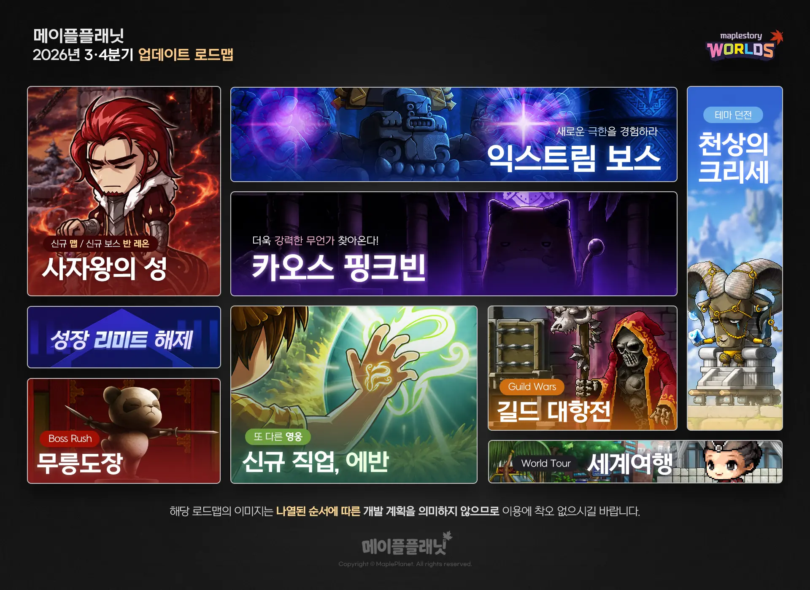

메이플플래닛 신규직업 에반 예고 드래곤 미르와 함께 크는 마법사
메이플플래닛 로드맵 공지 챙겨보시는 분들 계시죠. 저도 아란 스텝업 이벤트 소식 정리하다가 자연스럽게 다음 로드맵까지 훑어보게 됐는데요, 이번 3·4분기 로드맵에서 새 직업 하나가 유독 눈에 들어오더라고요. 바로 에반이에요.
참고로 저희 블로그에 처음 직업 선택 가이드 글도 따로 있는데, 그건 지금 바로 만들 수 있는 직업들 얘기고요. 오늘은 아직 게임 안에 없는, 로드맵에서 막 예고만 된 신규 직업 얘기라 시점 자체가 완전히 달라요.
3·4분기 로드맵에 뭐가 담겼나요
7월 21일 공식 공지로 올라온 메이플플래닛 3·4분기 업데이트 로드맵에는 신규 지역부터 신규 직업까지 총 8가지 콘텐츠가 한꺼번에 예고됐어요.
- 사자왕의 성 — 눈 덮인 신규 지역, 보스 반 레온과의 전투가 함께 준비돼요.
- 익스트림 보스 — 기존 보스전보다 어려운 새로운 난이도의 도전 콘텐츠예요.
- 카오스 핑크빈 — 기존 핑크빈보다 패턴이 강화된 상위 버전이에요.
- 성장 리미트 해제 — 성장 제한이 일부 확장될 예정인데, 구체 범위는 아직 안 나왔어요.
- 무릉도장 — 여러 층의 강한 적을 차례로 상대하는 보스 러시형 콘텐츠예요.
- 에반 — 드래곤 미르와 함께 크는 신규 마법사 직업(오늘 글의 주인공).
- 길드 대항전 — 길드끼리 힘을 겨루는 경쟁 콘텐츠예요.
- 세계여행 — 메이플 월드 밖 새 지역을 탐험하는 콘텐츠예요.
공지 맨 아래엔 이 로드맵 이미지가 나열된 순서를 개발 일정으로 오해하지 말아 달라는 안내도 붙어 있었어요. 그러니까 목록 순서만 보고 뭐가 먼저 나올지 예단하긴 어려운 상태고요.

이미지 출처: 메이플플래닛 공식 공지
에반은 어떤 직업일까요
에반은 드래곤 미르와 함께 성장하고 전투하는 마법사 계열 신규 직업이에요.
공지에서는 에반을 '또 다른 영웅'이라는 표현으로 소개했는데요, 미르와 함께 다양한 마법 스킬을 만나볼 수 있도록 준비 중이라고 해요. 메이플플래닛 환경에 맞게 구현해서 익숙하면서도 새로운 플레이 경험을 주는 게 목표라는 설명도 같이 붙었고요.
미르가 낯설지 않은 이유
메이플 시리즈를 오래 하신 분들껜 미르가 사실 낯설지 않으실 텐데요, 원작 메이플스토리에서도 에반은 2009년에 나온 마법사 계열 영웅으로, 마지막 오닉스 드래곤 미르와 계약을 맺고 함께 성장하는 캐릭터였거든요. 이명부터가 '드래곤 마스터'였을 정도로 미르라는 파트너가 정체성 그 자체인 직업이었고요. 메이플플래닛이 이번에 그 조합을 그대로 가져온 셈이라, 원작을 아시는 분이라면 반가운 소식일 수 있겠어요.
다만 스킬 구성이나 육성 방식은 미르가 붙는다는 것 말고는 아직 나온 게 없어요.
원작 메이플스토리에서도 아란·에반이 가장 먼저 나온 영웅 계열이었고, 그 뒤로 메르세데스·팬텀·루미너스·은월 같은 영웅들이 하나씩 더해졌었는데요. 메이플플래닛도 아란에 이어 에반까지 로드맵에 올라온 걸 보면, 비슷하게 영웅 라인업을 하나씩 늘려가는 흐름을 그대로 따라가는 걸로 보여요.
| 구분 | 원작 메이플스토리 에반 | 메이플플래닛 에반 |
|---|---|---|
| 계열 | 2009년 등장한 마법사 계열 영웅 | 마법사 계열 신규 직업 |
| 파트너·이명 | 오닉스 드래곤 미르 · '드래곤 마스터' | 드래곤 미르와 함께 성장·전투 |
| 스킬·육성 | 미르와 계약해 함께 크는 구조 | 정식 패치노트에서 공개 예정 |
출시 시점은 언제인가요
출시 시점은 아직 확정되지 않았고, 공지에도 '합류할 예정'이라고만 나와 있어요.
| 직업 | 지금 상태 |
|---|---|
| 아란 | 7월 3일 패치로 라이브 출시 — 지금 만들 수 있어요 |
| 에반 | 3·4분기 로드맵 예고 — 시점 미정 |
공지 하단에는 로드맵에 오른 콘텐츠들의 실제 적용 순서나 시점, 세부 내용이 개발 상황에 따라 바뀔 수 있다는 문구도 함께 있었는데요. 그러니까 지금은 '온다'는 것까지만 확실하고, 언제 오는지는 정식 패치노트가 따로 나와야 알 수 있는 상태예요.
아란도 로드맵에서 예고되고 실제로 라이브에 나오기까지 시간이 좀 걸렸던 걸 생각하면, 에반도 비슷한 준비 기간을 거칠 가능성이 커 보여요.
자주 묻는 질문
Q. 지금 게임에서 에반 만들 수 있나요?
아직이에요. 로드맵에서 예고만 된 단계라 캐릭터 생성 창에는 안 보여요. 같은 영웅 계열 중에서는 아란이 7월 3일 패치로 이미 라이브에 나와 있어서, 지금 바로 키워볼 수 있는 건 아란 쪽이에요.
Q. 아란이랑 에반 둘 다 신규 직업인데 같이 나오는 건가요?
아니에요. 아란은 이미 지난 7월 3일 패치로 라이브에 출시된 상태고, 에반은 이번 로드맵에서 이제 막 예고만 된 단계라 시점 자체가 달라요.
지금 시점에서 확실한 건 딱 이만큼이에요 — 에반이 온다는 것, 드래곤 미르와 함께 크는 마법사라는 것. 정식 패치노트로 스킬이나 육성법까지 풀리면 그때 다시 자세히 정리해드릴게요. 원작에서 미르랑 같이 컸던 분들이라면 이번 소식 자체로 반가우실 텐데, 그때까진 아란이나 시그너스 쪽 콘텐츠 챙기시면서 기다려보세요.
✔ 메이플플래닛 같이 보기 좋은 내용
· 메이플플래닛 레벨별 추천 사냥터 1~200 총정리
· 메이플플래닛 썬콜(아크메이지 썬,콜) 스킬트리·템세팅
· 메이플플래닛 나이트로드 스킬트리·템세팅
· 메이플플래닛 아란 쾌속성장 스텝업 이벤트 레벨별 보상 총정리
· 메이플플래닛 시그너스 기사단 다섯 직업 육성 순서
참고한 곳
· 메이플플래닛 공식 3·4분기 로드맵 공지
2026.7.21 게시 기준이며, 콘텐츠 순서·시점·세부 내용은 개발 상황에 따라 바뀔 수 있어요.